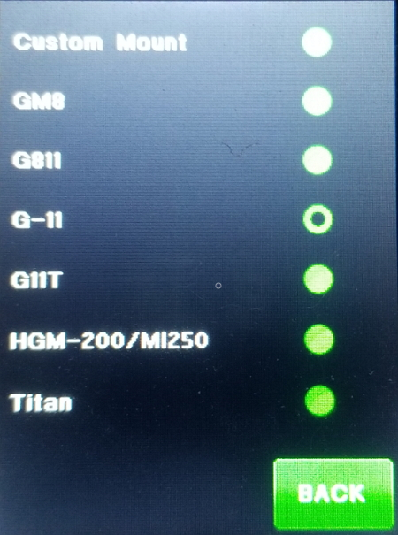

| Interactive Hand-Controller Menus - click on green button to Navigate |
|  |
This menu is where you select your mount type. The default is G-11.
However Titan25 mounts are no longer being sold as new mounts. All new Titans are Titan 50. NOTE: If you have a Titan 25 you will need to use custom mount type with the following setting: RA & Dec Worm = -270 RA & Dec Spur Gear = 25 RA & Dec Motor Encoder = 256 If using custom Gearing see Default Gearing Setting. You would select your mount type then hit back. NOTE: After changing mount type, you really need to do a Cold Start. This is the only way for the parameters to be completely updated. So if you was really changing you mount type, you would either need to power down and back up or go to the Startup menu on the mount menu page Select cold start then Restart mount. Changing the mount type from this window does not change the safely limits already set. |